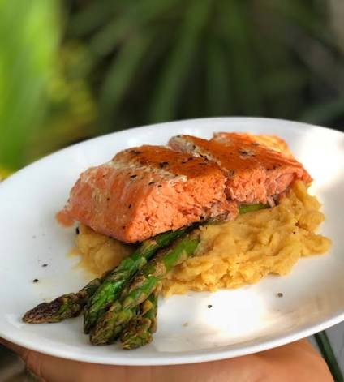

Salmón con Puré de Camote

El salmón con puré de camote es una comida fitness completa que combina proteínas de alta calidad, grasas saludables ricas en omega-3 y carbohidratos complejos. Es una excelente opción para favorecer la recuperación muscular y mantener una alimentación equilibrada.